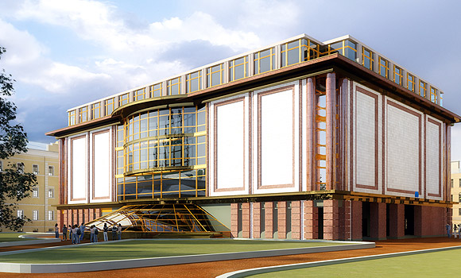

                <section class="common-section object-section select_fanc">
            <div class="common-white-wrap">
                <h1 class="object-title">Строительство ТЦ «Звенигородский»</h1>
                <div class="galleria-wrap">
                    <div class="fotorama" data-fit="cover" data-width="1600"
                         data-arrows="true" data-ratio="18/9"
                         data-max-width="100%" data-nav="thumbs"
                         data-thumbheight="64" data-allowfullscreen="true">
                                                    
                                                    
                                                    
                                                    
                                            </div>
                </div>
                <div class="additional-content-wrap">
                    <p><strong>Сдача объекта:</strong><br/> ноябрь 2010 г.</p>
                    <p><strong>Общая площадь:</strong><br/>5900&nbsp;м²</p>
                    <p><strong>Адрес:</strong><br/> г. Санкт-Петербург, Звенигородская ул. 1</p>
                </div>
                <div class="main-content-wrap">
                    <p>Строительство многофункционального торгово-делового комплекса «Звенигородский» со встроенным вестибюлем станции метро &#171;Звенигородская&#187;.</p>
<p>ТЦ «Звенигородский» представляет собой пятиэтажное здание. К архитектурным особенностям комплекса можно отнести атриум, лифты, эскалаторные группы, широкие галереи, просторные холлы, уютные кафе. На первом этаже центра расположен вход в вестибюль станции метро и салон цветов «Клумба». На втором этаже размещаются косметика и парфюмерия «РивГош», Табачный бутик «Fortress», ювелирный магазин «Чешский гранат» , бистро «Теремок», аксессуары «Zinger». На третьем этаже расположены магазины женской и молодежной одежды. На четвертом и пятом этажах размещается бизнес-центр.</p>
                </div>
            </div>
        </section>
    